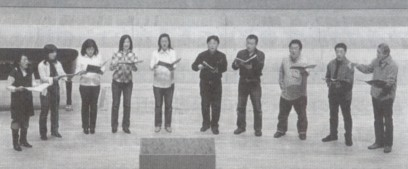

『アールコール・アンリミテッド』は高松高校音楽部（TMC）OBが中心の合唱同好会です。
OBの飲み会がそのルーツ。"練習後のビールが最高"という人ばかりです。
合唱経験の有無は問いません。とにかく歌いたい（飲みたい？）という人、大歓迎です。
月１回、土曜の午後、田端で練習＆飲み会を行っています。
今年(2008)は１月に文京区『合唱のつどい』に参加しました。７月には東京都合唱祭に参加の予定です。
飲み会だけの参加も歓迎します。興味のある方は、是非ご連絡ください。
世話役（連絡先）
桑原正芳（平成元年卒）
連絡先
廣瀬壮一(昭和51年卒)
新井(旧姓中西)ゆかり(昭和54年卒)